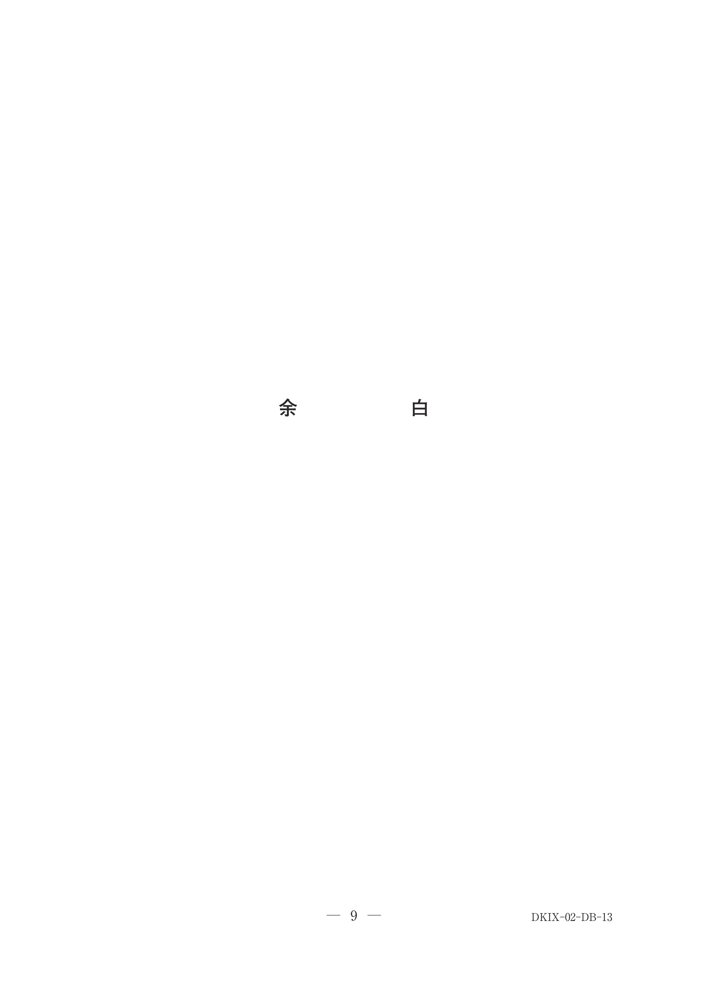
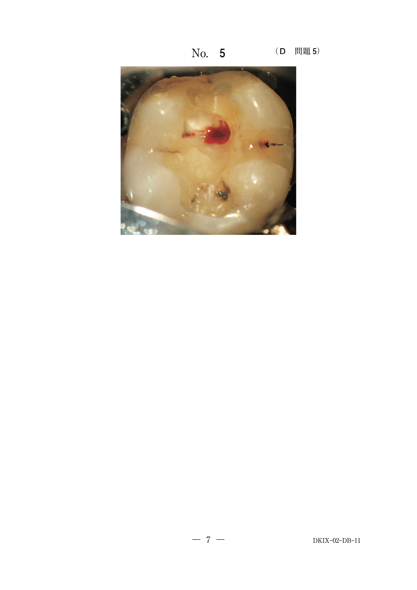
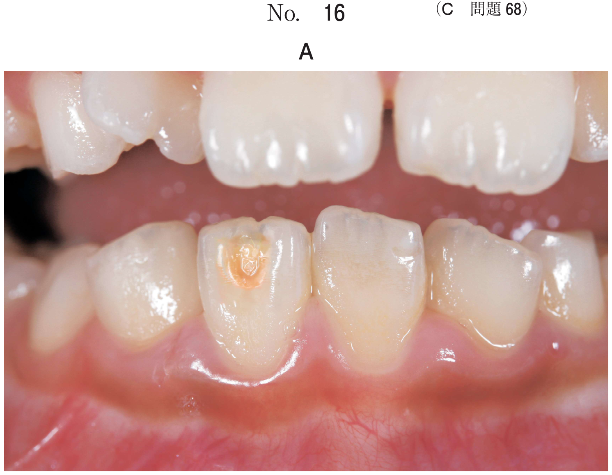

歯の破折
歯冠破折の分類と処置
| 分類 | 状態 | 処置 |
|---|---|---|
| エナメル質破折 | 露髄なし | 研磨、CR修復 |
| 象牙質破折 | 露髄なし | 間接覆髄、CR修復 |
| 露髄を伴う破折（小） | 露髄面が小さい | 直接覆髄 |
| 露髄を伴う破折（大） | 露髄面が大きい | 生活歯髄切断 |
露髄を伴う破折の処置選択（頻出）
- 露髄面の大きさが処置選択の根拠
- 露髄面が小さい（ピンポイント露髄）→ 直接覆髄
- 露髄面が大きい → 生活歯髄切断
生活歯髄切断の適応根拠
- 若年者（歯髄の生活力が旺盛）
- 受傷から来院までの時間が短い（感染リスクが低い）
- 露髄部分が限局している
- 受傷歯の根尖組織への影響が小さい
歯根破折の処置
| 破折部位 | 処置 |
|---|---|
| 歯頸部1/3（歯冠側） | 抜歯（固定困難） |
| 歯根中央1/3 | 整復固定 |
| 根尖1/3 | 経過観察または固定 |
乳歯の歯根破折で後継永久歯への影響が大きい場合は抜歯
過去問
8歳の女児。歯の破折を主訴として来院した。1時間前に転倒し顔面を強打したという。歯以外に受傷部はなく意識も明瞭である。両側の上顎中切歯の動揺は生理的範囲であり、打診痛はあるが自発痛はない。1┘は生活歯髄切断、└1は直接覆髄を行った。初診時の口腔内写真（別冊No.13A）とエックス線写真（別冊No.13B）を別に示す。1┴1に対する治療法の違いの根拠はどれか。1つ選べ。


b 辺縁歯肉の形態
c 歯根破折の有無
d 露髄面の大きさ
e 歯根膜腔拡大の有無
【解説】直接覆髄と生活歯髄切断の選択は露髄面の大きさが根拠。露髄面が小さければ直接覆髄、大きければ生活断髄を選択する。
12歳の男児。1時間前に転倒して前歯が破折したため来院した。自発痛はなく、動揺は認められなかった。歯髄電気診で反応を示した。初診時の口腔内写真（別冊No.41A）とエックス線写真（別冊No.41B）とを別に示す。生活歯髄切断法を行うこととした。その根拠として正しいのはどれか。すべて選べ。


b 受傷から来院までの時間が短い。
c 露髄部分が切端部に限局している。
d 受傷歯の根尖組織への影響が小さい。
e 硬組織による根尖閉鎖が期待できる。
【解説】生活断髄の適応根拠：若年者、受傷から短時間、露髄が限局、根尖への影響小。eはアペキシフィケーションの説明であり、生活断髄の根拠ではない。
5歳の女児。上顎右側乳中切歯の外傷を主訴として来院した。昨日、転倒し、A┘を打撲したが、自発痛が軽度であったため、そのままにしていたという。A┘の動揺度は2度で打診痛を認める。初診時の口腔内写真（別冊No.11A）とエックス線写真（別冊No.11B）を別に示す。適切な対応はどれか。1つ選べ。


b 固 定
c 感染根管治療
d 歯根尖切除
e 抜 歯
【解説】X線で歯根中央部の破折が認められる。歯根中央1/3の破折では整復固定が第一選択。後継永久歯への影響が懸念される場合は抜歯となる。
1歳6か月の男児。上顎乳前歯部の外傷を主訴として来院した。昨日、転倒し、上顎左側乳中切歯を受傷したという。初診時の口腔内写真（別冊No.21A）とエックス線画像（別冊No.21B）を別に示す。適切な対応はどれか。1つ選べ。


b 整復固定
c 感染根管治療
d 意図的再植
e 抜 歯
【解説】1歳6か月の乳歯で歯頸部に近い歯根破折が認められる。固定が困難であり、後継永久歯歯胚に近接しているため抜歯が適切。